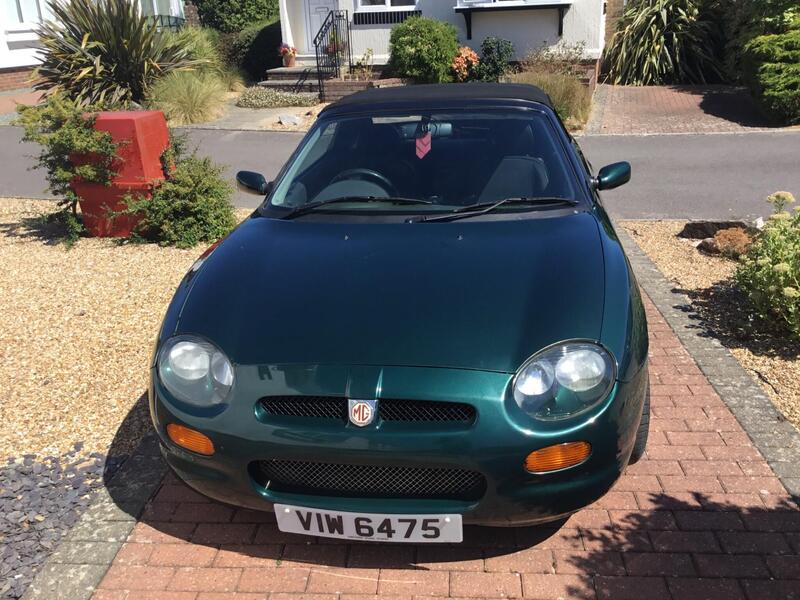
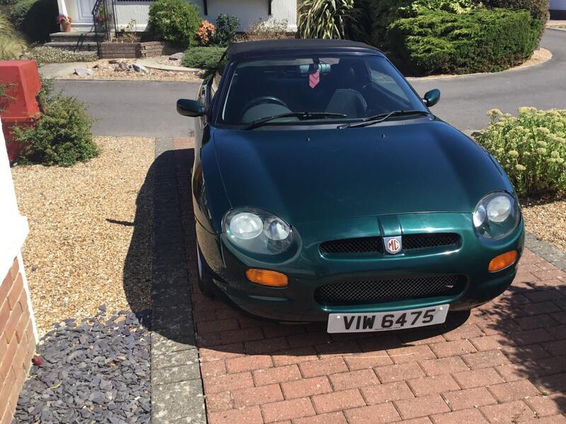
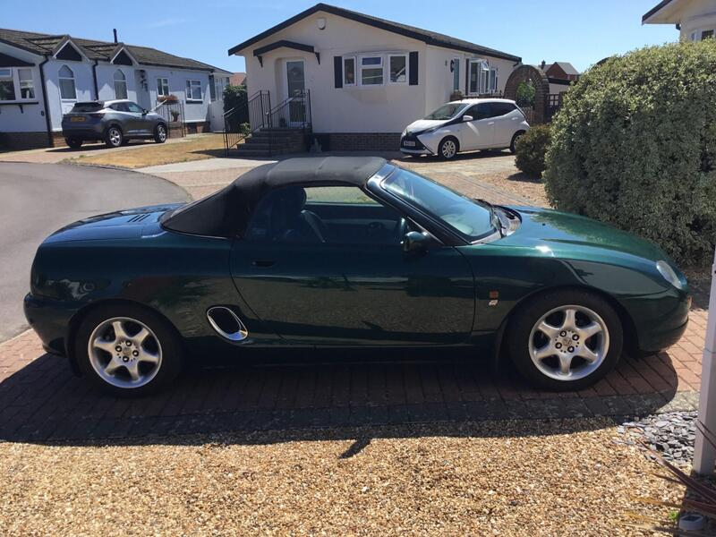
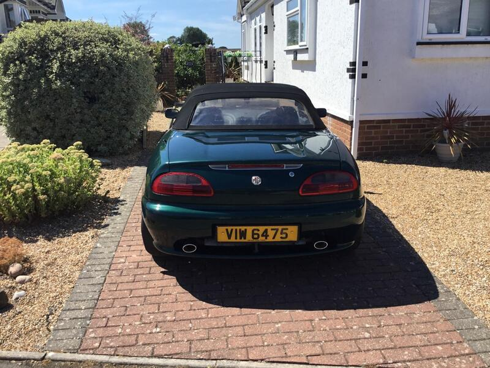

Seller photos from the AutoTrader ad.
MG MGF 1.8i
The closest MG at 29 mi, with a long MOT. Cheap fun.
Key facts
| Price | £2,975 |
|---|---|
| Year | 2002 |
| Miles | 81,100 |
| Model | MG MGF 1.8i |
| Colour | Green |
| Registration | 2002 (52 reg) |
| Owners | 5 owners |
| Service history | Not stated |
| MOT (AutoTrader ad) | 2 Jul 2027 (ad) |
| MOT (seller's text) | July 2027 (ad) |
| Seller | Private |
| Location | Bognor Regis |
| From GU7 | 29 mi (AutoTrader) |
| Checked | 15 October 2026 |
Why buy it
- Just fully serviced, cambelt done last year, new battery (ad)
- Never overheated, kept under cover (ad)
Things to check
K-series gasket: ask what type is fitted
Check the Hydragas ride height
- MG MGF / TF weak spots
Can be serious underneath; mild-steel underfloor coolant pipes rust; radiators corrode. K-series head gasket – want proof of MLS gasket, revised oil rail, replaced dowels; VVC mechanism; Hydragas suspension on MGF.
Seller says (extract)
“This vehicle is in very good condition ,it has many years of service history just been through a full service and an m.o.t until July 27 with new plugs filters oils etc .Brand new battery .cam belt was changed last year.Starts first time without fail,many parts have been replaced over the years to keep this beautiful car in top running form.It's never over heated and never lost coolant.It's been kept under cover only used for car runs and classic car shows.…”